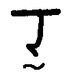
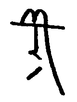

が必要である。
が必要である。バート語(バート語:Bhátán, リパライン語:Phertarsvirle)は、PMCFアイル共和国バート人自治区で話されるシアン大語族ラネーメ語族ファスマレー語派アイル諸語の言語である。ラネーメ祖語から派生した言語であり、主にアイル共和国の闇島において話されている。話者数は三万人ほどである。ラネーメ祖語における有気無気の対立を保存しているが、ラネーメ語族においてはあまり見られない屈折的な言語構造になっている。
| 唇音 | 歯茎音 | そり舌音 | 軟口蓋音 | |||||
| 鼻音 | m [m] | n [n] | ṇ [ɳ] | |||||
| 破裂音 | p [p] | b [b] | t [t] | d [d] | ṭ [ʈ] | ḍ [ɖ] | k [k] | g [ɡ] |
| ph [pʰ] | bh [bʱ] | dh [dʱ] | kh [kʰ] | gh [ɡʱ ~ ɣ] | ||||
| 摩擦音 | w [v ~ ʋ ~ w] | c [s] | s [z] | ṣ [ʂ] | h [x] | |||
| 接近音 | l [l ~ ɾ] | ḷ [ɭ] | ||||||
| ふるえ音 | r [r] | |||||||
| x [ʃ] | z [tʃ] | j [j] | y [ɥ] | ṣl [ʂɻ ~ ʂɭ] |
注：
| 語頭に立てる |
| 語頭に立たない |
| 外来語のみで使用 |
長短のミニマムペアは少ないが、gháni「火」とghání「(主観的な)暑さ」などの例があるにはある。
バート語には高低のイントネーションがある。単語ごとに決まっているものではないので、アクセントでも声調でもない。
規則は以下の通り。
バート文字は、パイグ文字などから派生したラネーメ系文字の一つである。元々は完全なaアブギダ（「伝統表記」）である。しかし、現在では、元々の子音ゼロの字に母音符号のついた形をそれそのままで母音字として用いる、よりアルファベット的な書かれ方をする（「現代表記」）。
ただし、（現代表記であっても）子音字には随伴母音aが含まれるため、子音をそれ単体で表す時には母音ゼロの字が必要である。
| 唇音 | 歯茎音 | そり舌音 | 軟口蓋音 | |||||
| 鼻音 |  |  |  | |||||
| 破裂音 |  |  |  |  |  |  |  |
|
 |  |  |  |
|||||
| 摩擦音 |  |  |  |  |
||||
| 接近音 |  | |||||||
| ふるえ音 |  | |||||||
 |  |  |


|  |  |  | |
| a+長子音 | au+長子音 | i+長子音 | u+長子音 |
ラテン字転写ではṣはsに点のついた文字だが、バート文字ではcに点を付ける。現世での古い資料だと誤ってsに点をつけている例があるので注意。
関係詞を除き基本的に前置修飾。基本的に動詞を文末に置き、様々な格の名詞がそれを修飾するという体系である。動詞の前に名詞がどの順番で並ぶかは自由だが、格変化した名詞の方が名詞後置格+後置詞より前に出る傾向があり（ただし、名詞後置格+後置詞が内部に節を含んでいる場合などは、文構造の分かりやすさのため主語などを動詞の直前に置いたりもする。）、「名詞後置格+後置詞」は動詞より後に出ることもできる。歌や詩の場合は格変化した名詞が動詞より後ろに来ることも可能である。
以下の3品詞が基本である。
動詞：文の中核をなす。 名詞：格変化し、動詞の主体や対象となる。 後置詞：名詞に後続し、格のような働きをする。
以下、少数の語が属する感のあるグループである。
無変化動詞：hem一語のみが属する。活用形を持たず、主格を2つ取るなど、他の動詞とは大きく違った挙動を見せる。 副詞：活用せず、動詞を修飾する。 形容詞 終助詞 名詞接続詞 文接続詞 間投詞 関係代名詞
名詞は主格・対格・属格・具格・後置格の5種の格を持つ。このうち、主格・対格は動詞を直接修飾し、属格は後続する名詞を修飾する。具格は基本的に動詞を直接修飾するが、「〜の上」「〜の近く」などの一部の後続名詞を修飾することもある。後置格は直後に後置詞を要求し、逆に後置詞は基本的に直前に後置格を要求する。なお、主格の人称に応じて動詞が人称変化する。
名詞の曲用は、名詞の辞書形が子音で終わるか母音で終わるかによって大きく異なる。子音で終わるものを子音幹、母音で終わるものを母音幹と呼ぶ。
| 子音幹 | 主格 | 対格 | 属格 | 具格 | 後置格 |
| 単数 | -Ø | -ele | -án | -ai | -i |
| 複数 | -á | -elená | -áná | -ainá | -iná |
| 母音幹 | 主格 | 対格 | 属格 | 具格 | 後置格 |
| 単数 | -Ø | -dhel | -om -homá | -bhau | -ḍi |
| 複数 | -zá | -dhelá | -omá -home | -bhauná | -dhíná |
-omと-homá、-omáと-homeの使い分けについてはこれから調べる。
複数形後置格に後置詞hínaが後続する場合は義務的に縮約が起こり、子音幹なら-ína、母音幹なら-dhínaとなる。dで終わる子音幹名詞（例：dhárad）の複数形hína縮約形（dháradína）と、動詞（例：bhárúḷ）の一人称過去分詞（bháradína）を混同しないよう注意が必要である。
口語では単数後置格に後置詞hínaが後続する場合にも縮約が起こることがある。子音幹なら-ínaで複数の場合と同形である。母音幹なら-ḍínaであるが、hínaのhや複数形hína縮約形につられ-dhínaと発音される場合も多い。
人称代名詞は次の通り。なお、形態上は全て母音幹単数として曲用する。
| 一人称 | 二人称 | 三人称男 | 三人称女 | |
| 単数 | ápa | áma | kí | ká |
| 複数 | bháma(包括) bhá(除外) | mábha | kiṣlo | kaṣlo |
後置詞は変化せず、直前に後置格を要求して全体で一つの文節を構成する。
数詞は名詞として振る舞う。数詞の属格に名詞を続けることで「〜個の名詞」といった意味となる。
人名は、基本的に「普通名詞+(w)aim」または「普通名詞+(a)n/m」として構成される。フルネームはghátu「子供」という語を用いて「父親の名前 ghátu 名前 (苗字/bhátnímaṣ)」と表現する。
なお、-(w)aimは後置詞ema「〜のように」と同根であり、-(a)nは単数属格語尾-ánと同根である。
歌や詩の場合は格語尾が部分的に省略されることがありうるが、一般的な文では基本的に省略されることはない。
属格には所有属格（「Aの所有するB・AにとってのB」）・性質属格（「Aという性質のB」）・材料属格（「AでできたB」）がある。名詞の属格が性質属格として使われるときは、直後の名詞と同一の文節に属する。故に、「sáhomá woghit」（sá：女、woghit：兄弟姉妹；はらから）は「ある女にとって兄弟姉妹に当たる人」の意味の場合は所有属格なので「sáhomá」「woghit」それぞれが文節を成すが、「女という性質を持った兄弟姉妹」、つまり「姉妹」の意味の場合は性質属格なので「sáhomá woghit」で単一の文節である。
属格が直後に名詞を伴わないように見える場合があるが、これは形式名詞k「もの」の主格が属格の直後にあるものである。
nánaは（疑問代名詞としての通常の用法と共に）関係代名詞としての特殊な用法がある。英語のとかと同様、前に先行詞を、後ろに文をとって、全体で名詞節を作る。後置修飾する句はないという建前上、一セットで名詞節という設定である。名詞節の格は先行詞に格語尾をつけて表す。
なお、「内部の動詞のどの格を意味的に先行詞が埋めるか」は明示的には表さない。（the building that I loveもthe book that doesn't closeもthe house that we liveも全部thatで言えるみたいな感じ）ということは、関係代名詞は直接は動詞とやりとりをしないので、格変化をしない。（ただし、属格はありうるよなぁ）
動詞は基本的に不定詞・終止詞・過去分詞・未来分詞・命令形の5種類の現れ方がある。どれも格付き名詞を受け取って節を構成できる。
動詞には動作動詞(非瞬間動詞とも)・瞬間動詞・状態動詞の3種類があり、種類に応じて終止詞・過去分詞・未来分詞が何を意味するかが変わってくる。
動作動詞：
瞬間動詞：
状態動詞：
上記の規則を図解したものが以下の通りである。


不定詞は基本的に名詞節（人称：指示・固有）として振舞う。不定詞 + heyákáṣloで「〜だろうか」という表現が作れたりする。後置詞が後ろについても良いが、この時にも後置格の語尾はつかない。主格・後置格以外は持たないので、それ以外の格で用いるときは不定詞の直後にko「これ」を置き、それを格変化させる。
命令形は文を終わらせ、命令の意図を表す。
ちなみに、動作動詞の代動詞はzúḷ「する」である。
語幹が子音で終わる場合、カッコ内のaが挿入される。したがって、cákíkúḷ「来る」とcákíkaúḷ「〜を到来させる；〜をもたらす」などは不定詞と命令形以外では同形となる。
| 一人称 | 二人称 | 三人称女 | 三人称男 | 指示・固有 | |
| 命令形 | -Ø | ||||
| 不定詞 | -úḷ | ||||
| 終止詞 | -(a)dhí | -(a)mú | -(a)ze | -(a)bhá | -(a)ká |
| 過去分詞 | -(a)dína | -(a)múná | -(a)zená | -(a)báta | -(a)kátá |
| 未来分詞 | -(a)díha | -(a)múha | -(a)zebá | -(a)báṣlo | -(a)káṣlo |
二重子音で終わる命令形（accúḷ → acc、rakkúḷ → rakk）は発音上は末尾に[ə]が挿入される。ただし、これらを発音に即してacca、rakkaなどと表記するのも、非標準的ではあるが広く行われている流儀である。
sujúḷのように、a以外の母音にjが後続している語幹末の場合、例外的に語幹を長音化して接尾辞-zemを付ける。sujúḷならsúzemである。
cánajúḷのように、-ajで終わる語幹末の場合、綴りはcánajとなるが、発音としてはcánaiであるかのように発音されるので/saːnai̯ ~ saːnɛː/である。cánaiと綴るのは非標準的ではあるが珍しくない。
ṣíkahúḷやbházahúḷのように、-ahで終わる語幹末の場合、-ahは-auとなるのでṣíkauやbházauとなる。
不定詞・終止詞・過去分詞・未来分詞・命令形の5種類以外の現れ方として、状況副詞化語尾というものがある。非完了の状況副詞化語尾-(a)maは「〜する/しているという状況で」といった副詞節を作り、完了の状況副詞化語尾-(a)ghiは「〜し終わったという状況で」といった副詞節を作る。
名詞化接尾辞をつけることにより、動詞を名詞化できるが、どの接尾辞を用いるかによって意味が異なる。
| 母音幹 | 子音幹 | 具体例 | |
| 名詞化第一接尾辞 | -z | -az | heyáúḷ「思う、考える」 → heyáz「思考」 |
| 名詞化第二接尾辞 | （かつて存在したが今は痕跡的にしか残っていない） | ||
| 名詞化第三接尾辞 | -ḍíṣ | -íṣ | zíghúḷ「整然としている、規則的である」 → zíghíṣ「時計」 |
| 名詞化第四接尾辞 | -hí | -í | nádítúḷ「眠い」→ nádítí「眠さ」 |
| 名詞化第五接尾辞 | -káta | -akáta | zeúḷ「巻く」→zekáta「腰巻き」 |
動詞より前において、動詞を修飾する。曲用したりしない。否定文はám(否定副詞、〜でない)で作る。
文接続詞は文と文を繋ぎ（ṣiṇṇa(しかし)など）、名詞接続詞は名詞と名詞を繋ぐ（jo(または)など）。名詞接続詞で複数の名詞を繋ぐ場合、格変化するのは最後の名詞だけであり、それ以外は主格である。
文末に置く。今の所「ek 〜らしい 〜みたいだ」のみ。
単独の名詞節（主格）で疑問文を意図することができる。nána「何」を含んだ文で、そこに当てはまる語を尋ねる疑問文が作れる。
jo ám?を文末につけることで肯否疑問文を表す。
感嘆とか反語とかは疑問文で表す。
-úḷ emaで「〜するだなんて」という感嘆文を表せる。
現状「amáma 大きい 偉大な」「kom これ」のみ。日本語の連体詞みたいな、名詞を修飾する役割のみを持つ品詞って扱いにしようかな。
感動詞とも。文中どこにおいてもよい。
無変化動詞hemは以下の用法を持つ。
hemは自身の命令形や過去分詞などを持たないので、それらを表すには補充形であるbhápúl「〜(hína)である」を用いる。